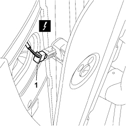
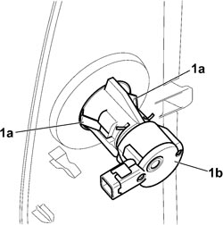

5580C26 PASSENGER AIR BAG DISABLING KEY LOCK BARREL/SWITCH - R.R.
- Path
- Procedures > 55 ELECTRICAL EQUIPMENT > 5580 SPECIAL ACCESSORIES > 5580C AIR BAG SYSTEM > 5580C26 PASSENGER AIR BAG DISABLING KEY LOCK BARREL/SWITCH - R.R.
- Kind
- repair procedure (removal / refitting; the operation number is the code)
- Applies to
- all engines; all production periods
- Interactive page
- https://sloeber94.github.io/elrnDB-fCrm/en/#/194000807
Applies to: all engines; all production periods
- Turn the ignition key to the OFF position and extract it.
- Disconnect the negative and positive battery terminals and insulate them.
- Wait for 10 minutes before continuing.
Description | Connector | |
|---|---|---|
BATTERY |
Applies to: all engines; all production periods
 Removing
Removing
 Refitting
RefittingWorking from the passenger side, perform the following operations:
Op. 7040A45 RIGHT DASHBOARD SIDE TRIM - R.R.
1. Disconnect the electrical connection.
Description | Connector | |
|---|---|---|
1 | PASSENGER AIRBAG DISABLEMENT SWITCH |

Applies to: all engines; all production periods
1. Release the anchorage clips (1a) and remove switch (1b) for passenger air bag deactivation.

Applies to: all engines; all production periods
Refitting
Removing- Fit the passenger air bag deactivation switch in its seat and ensure it is correctly anchored.
Connect the electrical connection.
Description | Connector | |
|---|---|---|
PASSENGER AIRBAG DISABLEMENT SWITCH |
Op. 7040A45 RIGHT DASHBOARD SIDE TRIM - R.R.
- Connect the negative and positive battery terminals.
Description | Connector | |
|---|---|---|
BATTERY |
Topics linked from this page (4)
- 5580C AIR BAG SYSTEM
- 7040A45 RIGHT DASHBOARD SIDE TRIM - R.R.
- A001 BATTERY
- H075 PASSENGER AIR BAG DISABLING SWITCH
Topics that link to this page (13)
- K079 PASSENGER AIRBAG DISABLEMENT WARNING LIGHT FLASHING
- K082 PASSENGER AIR BAG DISABLED WARNING LIGHT ON
- 5010C55 RIGHT LOWER AIR DIFFUSER - R+R
- 5040C10 AIR CONDITIONING CASING - R.R
- 5040C50 AIR CONDITIONING HEATER RADIATOR - R.R.
- 5040C64 A/C EVAPORATOR - R+R
- 5040D80 AIR CONDITIONER SYSTEM WIRING BUNDLE - R R OR REPLACE
- 5040D94 AIR CONDITIONING LEFT UPPER AIR DISTRIBUTION FLAP MOTOR (DEFROST) - R.R
- 5505C10 FRONT CROSSMEMBER WIRING - R.R
- 5505C31 BUILT-IN WIRING UNDER DASHBOARD - R.R.
- 7040A10 DASHBOARD TRIM - R+R
- 7040A97 INSTRUMENT PANEL TRIM SUPPORTING CROSSMEMBER - R.R
- 7095E22 SOUND-PROOF PANEL UNDER DASHBOARD SUPPORTING CROSSMEMBER - R.R.